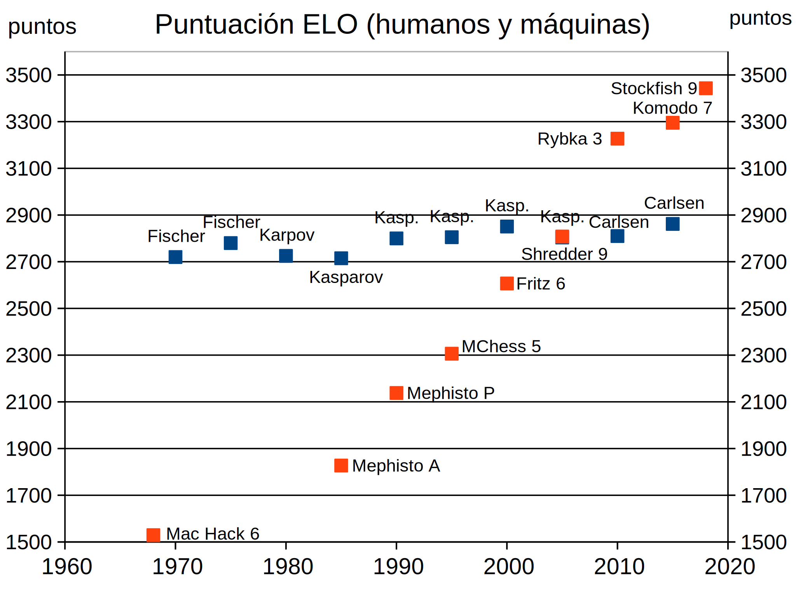

El ajedrez es posiblemente el juego de estrategia de tablero más conocido del mundo. Se cree que el juego fue inventado en la India en el siglo VI, aunque las reglas del ajedrez moderno se crearon a finales del siglo XV, muy probablemente en la ciudad de Valencia, que en aquella época era el centro económico, político y social de la Corona de Aragón.
La primera máquina capaz de jugar al ajedrez fue construida en 1912 por el ingeniero e inventor Leonardo Torres Quevedo, aunque sólo era capaz de jugar un caso muy particular, dar jaque mate con rey y torre contra rey.
En 1950, Alan Turing escribió el primer programa de ordenador teóricamente capaz de jugar al ajedrez, aunque ese programa nunca llegó a ejecutarse en un ordenador.
En principio, lo "único" que tiene que hacer un programa es calcular todas las jugadas posibles y elegir la que conduce al mate. El problema es que la cantidad de jugadas posibles del ajedrez es tan gigantesco que seguramente ningún ordenador tendrá nunca esa capacidad. En su lugar, los ordenadores se tienen que conformar con explorar todas las posibilidades de las próximas jugadas e intentar evaluar cuál es la posición más ventajosa, como hacen los humanos.
Desde 1950, los programas de ordenador han ido mejorando en ambos aspectos. El aumento de potencia bruta del hardware ha permitido ir aumentando el número de jugadas exploradas, es decir, la profundidad de la búsqueda. Los programadores han ido mejorando la función de evaluación de los programas, en busca de la mejor jugada posible en cada movimiento.
En 1957 Alex Bernstein programó en un IBM 704, uno de los últimos ordenadores basados en válvulas de vacío, el primer programa capaz de jugar partidas completas. Ese programa marcó el comienzo de la batalla entre humanos y máquinas, que se prolongó durante 50 años.
Alex Bernstein escribió el primer programa que jugó partidas completas.
Alan Kotok escribió el primer programa que ganó a novatos.
Richard Greenblat escribió Mac Hack, el primer programa que ganó partidas en torneos.
Robert Hyatt escribió Cray Blitz, el primer programa que ganó una partida a un maestro.
Feng-hsiung Hsu escribió Deep Thought, el primer programa que ganó una partida en un torneo a un gran maestro, Bent Larsen.
Richard Lang escribió Chess Genius, el primer programa que ganó una partida al campeón del mundo, Gary Kasparov.
IBM escribió Deep Blue, el primer programa que ganó un torneo al campeón del mundo, Gary Kasparov, aunque este denunció trampas y no aceptó el resultado.
La empresa ChessBase escribió Deep Fritz, el primer programa de PC que ganó al campeón del mundo, Vladimir Kramnik.
La gráfica siguiente muestra la evolución de la puntuación ELO de los mejores jugadores de ajedrez y de los mejores programas de ajedrez: